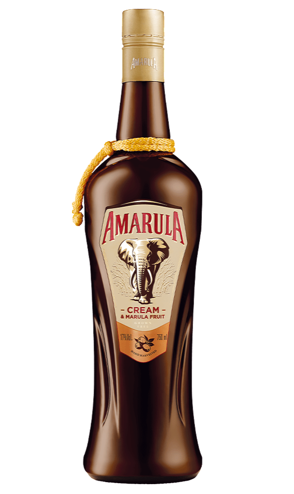
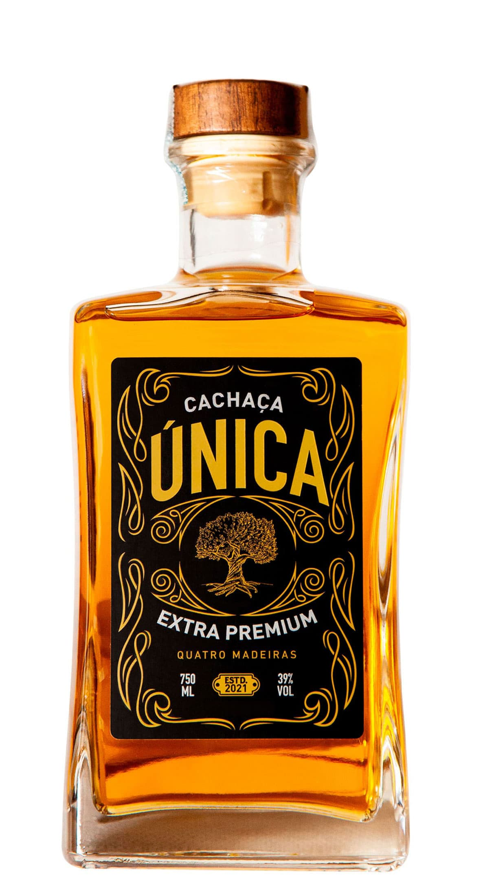
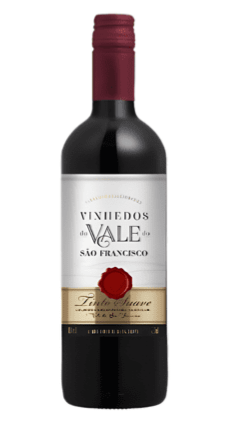
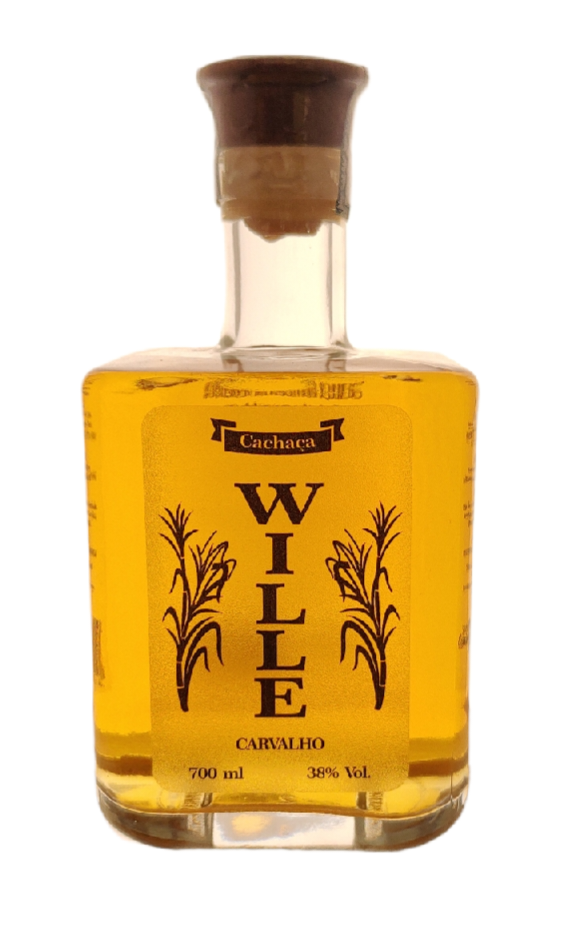
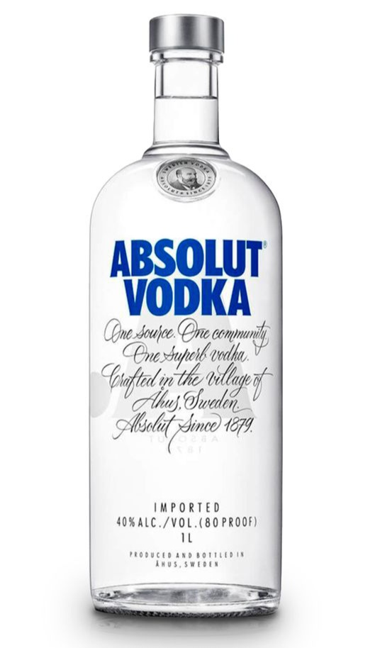
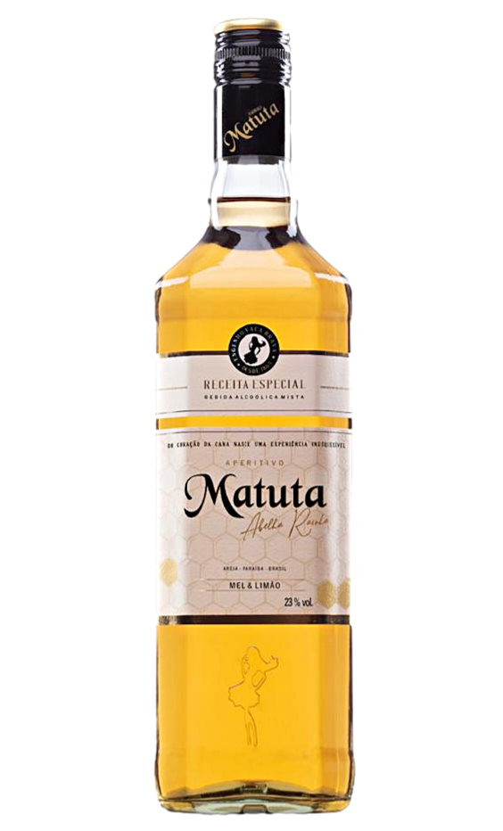
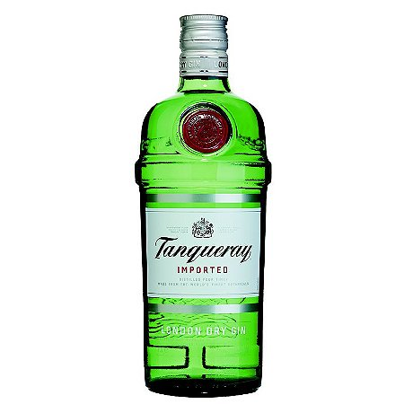

Licor Amarula
Licor é uma bebida alcooliza que é possível fazer vários drinks
R$115,00

Cachaça Única
Cachaça é uma bebida alcooliza que é possível fazer vários drinks
,00

Vinho Vale do São Francisco
Vinho é uma bebida alcooliza proveniente da uva que é possível fazer vários drinks
R$25,00

Cachaça Wille
Cachaça é uma bebida alcooliza que é possível fazer vários drinks
R$80,00

Vodka Absolute
Gin é uma bebida alcooliza que é possível fazer vários drinks
60,00

Matuta Mel com Limão
Cachaça Matuta é uma bebida alcooliza que é possível fazer vários drinks
,00

Gin
Gin é uma bebida alcooliza que é possível fazer vários drinks
R$90,00